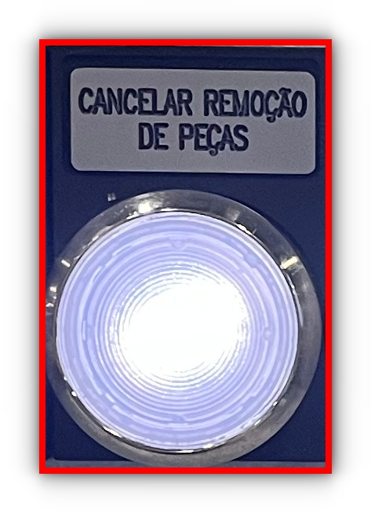
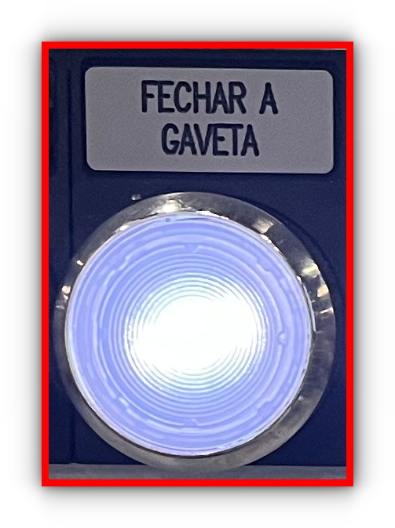
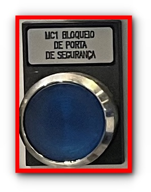
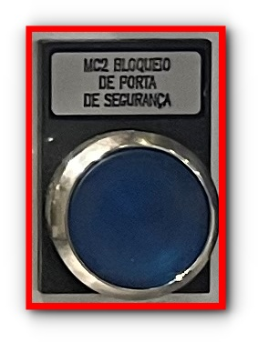

Troca de ferramentas concluída!
TROCA DE FERRAMENTAS OP.60 A
21. Aguardar usinagem da próxima peça piloto.
-> Se as medidas da peça não estiverem dentro da tolerância, repetir o processo a partir
do .
->Se as medidas da peça estiverem dentro da tolerância a usinagem da próxima peça é iniciada
automaticamente.
20. Pressionar o botão "NOK 100% correção".

19. Pressionar o botão "MC1 Corr." ou "MC2 Corr." (Conforme o canal que está
sendo feita a troca das
ferramentas).


18. Pressionar o botão "Usinagem".

17. Pressionar o botão "Pittler".

Se as medidas estiverem correspondendo:
16. Pressionar o botão "MENU SELECT".

15. Medir a peça no cavalete de medição e ver se as medidas estão correspondendo com as
medidas
do Jenoptik.

14. Retirar a peça de dentro da gaveta CEP, fechar a gaveta e pressionar o botão "CANCELAR
REMOÇÃO DE PEÇAS"

13. Pressionar o botão da "FECHAR A GAVETA" para abrir a gaveta CEP.

A primeira peça será a piloto.
-> Se as medidas da peça estiverem dentro da tolerância, a usinagem da próxima peça será
automatica e a troca de ferramentas foi concluída.
-> Mas se as medidas da peça não estiverem dentro da tolerância a peça irá ser colocada
dentro da gaveta CEP.
12. Pressionar o botão "Maskin Start", para iniciar o processo de usinagem.

11. Vá até o campo que corresponde ao número de vidas úteis das ferramentas que foram
trocadas e pressione o botão "Reativar".

10. Pressione o botão "Desg. fer.".

9. Pressione o botão "Parâmetros".

8. Reativar o número da vida útil das ferramentas.
Pressine o botão "MENU SELECT".
-> Em seguida pressione o botão "Pittler".
7. Fechar a porta e pressionar o botão "MC1 BLOQUEIO DE PORTA DE SEGURANÇA" ou "MC2
BLOQUEIO
DE PORTA DE SEGURANÇA" de cor azul para travar a porta.


6. Efetuar a troca das ferramentas necessárias.
Para efetuar o giro do castelo de ferramentas é necessário estar com a porta fechada e trancada e
pressionar o botão "Rev+", de acordo com o canal (canal 1 = azul / canal 2 = amarelo) que
será feita a troca de ferramentas.


5. Abrir a porta, pressionando o botão "MC1 PARADA" ou "MC2 PARADA" da cor
preta que corresponde
ao canal.


4. Pressione o botão "Set-up lage", para colocar o fuso em posição de inicial,
liberar a abertura da porta e a movimentação do castelo de ferramentas.
OBS: O castelo de ferramentas se movimenta somente com a porta fechada.

3. Reiniciar o canal, mantendo pressionado o botão "Stop MC1" ou "Stop MC2",
por três
segundos.
(Assim que o canal for reiniciado o botão verde que corresponde ao canal irá piscar)


2. Selecionar o canal que será feita a troca de ferramentas.
Pressionando o botão "CHANNEL".

1. Antes de começar a troca das ferramentas, é necessário parar o canal que será feita a
troca de ferramentas, com uma peça bruta no fuso, esperar a lançadeira parar na posição de troca de
peças e aguardar
o Jenoptik terminar a medição da peça.
Após todos os itens estarem em suas devidas posições seguir o ponto a
ponto.